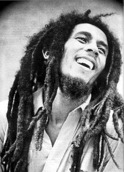

El reggae es un género musical que se desarrolló
por primera vez en Jamaica hacia mediados de los
años 1960. Aunque en ocasiones el término se utiliza
de modo amplio para referirse a diferentes estilos
de música jamaiquina,por reggae se entiende en
sentido estricto un género musical específico que se
originó como desarrollo de otros anteriores como el
ska y el rocksteady.
El reggae se caracteriza rítmicamente por un tipo de
acentuación del off-beat,conocida como skank.
Normalmente, el tiempo del reggae es más lento
que el del ska y el rocksteady
El reggae suele acentuar el segundo y cuarto pulso de
cada compás, y utiliza la guitarra para poner o bien
énfasis en el tercer pulso o para mantener el acorde
desde el segundo hasta el cuarto.
Bob Marley fue un compocitor de reggea que triunfo
mucho en esa clase de musica
